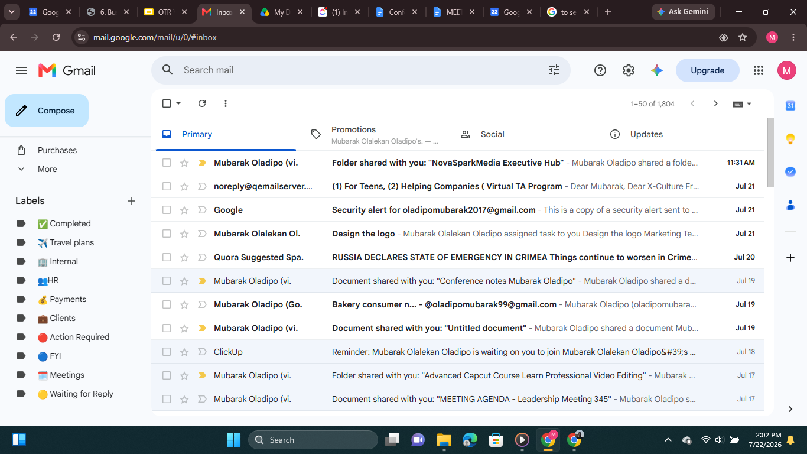
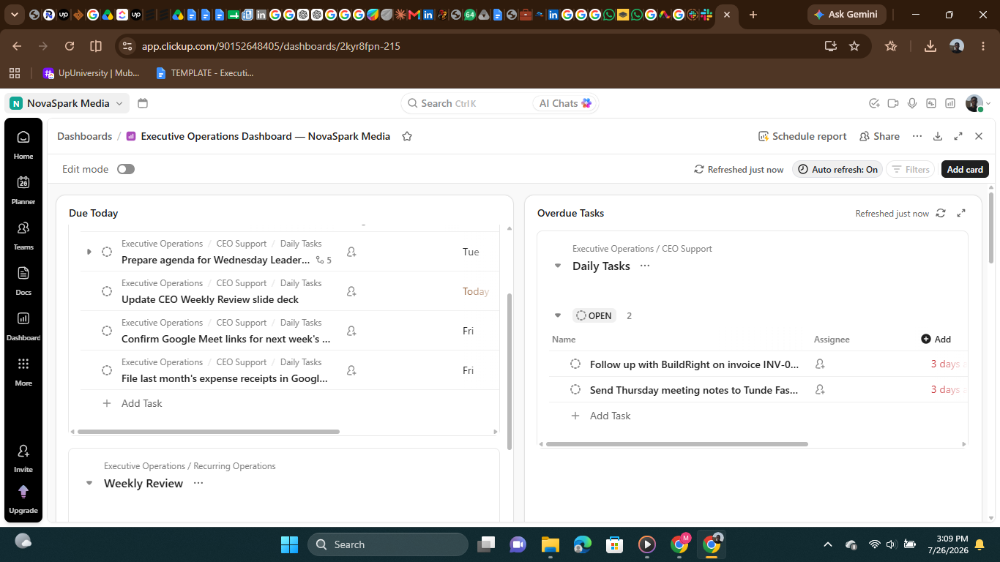
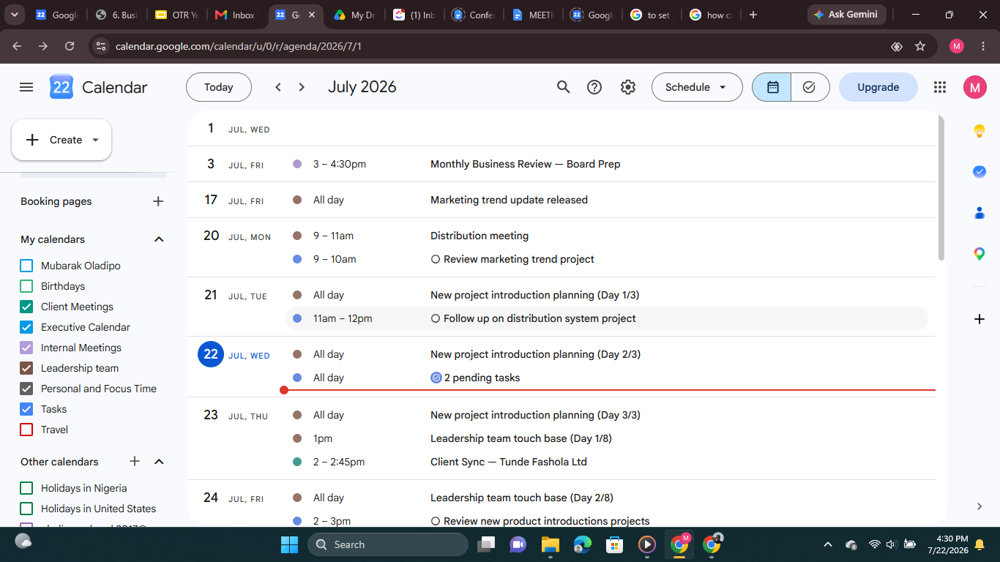
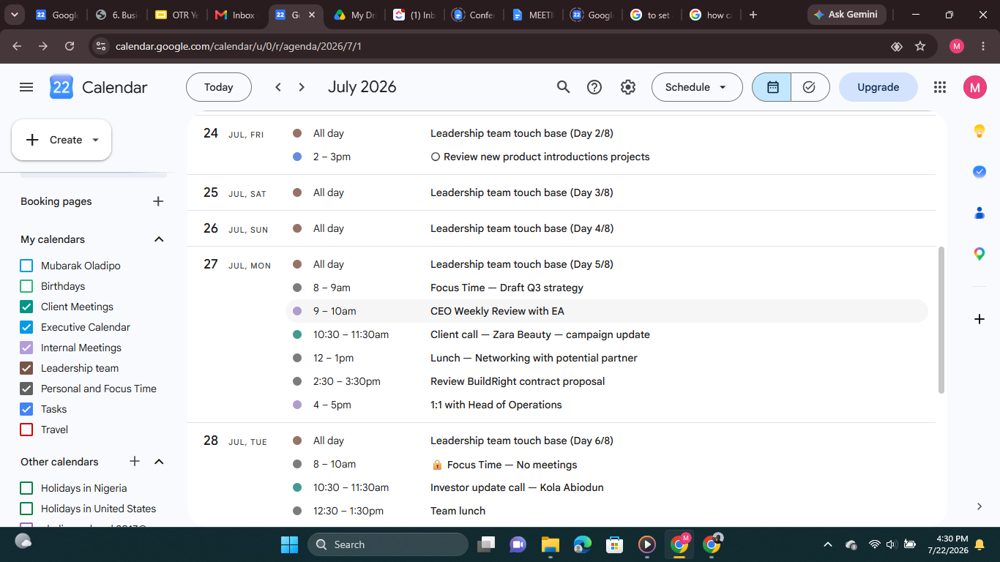
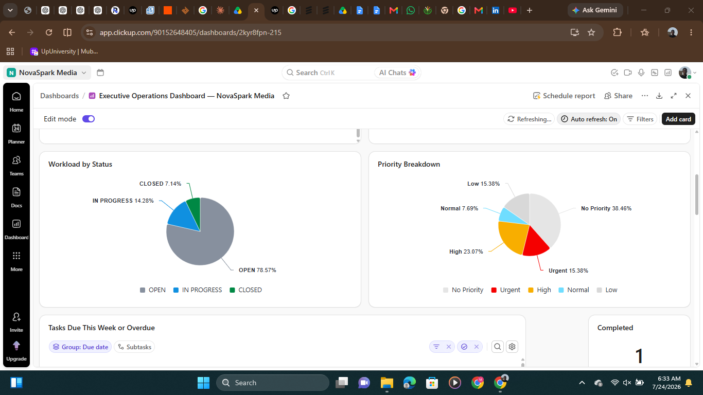
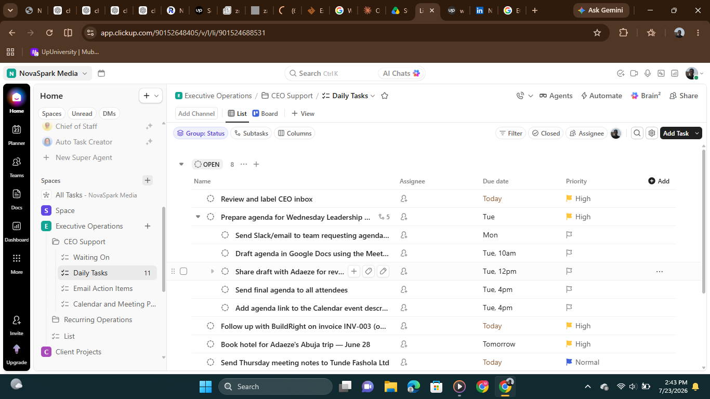

Executive Operations Hub
A centralized executive support workspace designed to organize communication, scheduling, task management, documentation, and recurring administrative workflows in one structured system
Business problem
In the simulated business scenario, the founder was still managing day-to-day operations manually—replying to emails between meetings, tracking tasks in a personal notebook, and coordinating calendars over text. There was no shared system the assistant or operations team could step into, so recurring tasks depended heavily on the founder's memory.
Tool stack
| Google Workspace |
|
| ClickUp |
|
| Google Drive | File management & role-based access |
System snapshots
Communication Systems


Planning & Calendar


Task & Project Management


Automation & Recurring Tasks


Operational Impact
-
Centralized Executive Operations
Consolidated executive scheduling, communication, documentation, and task management into a single operational system, making information easier to locate and manage.
-
Improved Operational Consistency
Standardized recurring administrative processes through documented SOPs, reducing dependence on memory and enabling repeatable execution.
-
Better Collaboration
Established organized communication channels, shared documentation, and collaborative workspaces that support effective coordination across team members.